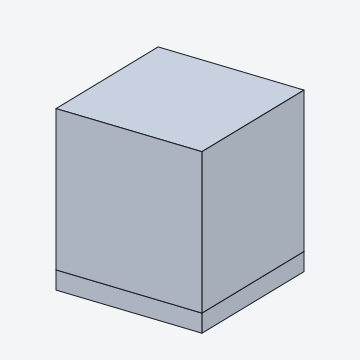


The owner approved this step before it started.
Write the first evals. The owner asked for evals that do two jobs: tell shapes apart, and show that a shape is a solid that a person might want. The owner named self-intersection as one to include.
| File | Change |
|---|---|
evals.py | New. It holds five checks on one mesh, one measure of the gap between two meshes, and a key that spots the same shape in a different order. It needs only NumPy. |
data/round0-evals.npz | New. The result of every check for every shape in round zero. |
data/round0-surface.npy | New. A group number for every shape. Shapes with the same surface share a number. |
| Check | The question it answers | How it works |
|---|---|---|
| Closed | Is it a sealed solid, with no holes and no inside-out faces? | Every edge must be shared by exactly two faces that face opposite ways. |
| Volume | How much space does it enclose? | It adds up the space under every face. A negative result means the mesh is inside out. |
| Bend | Are the faces flat? | For each face, it measures how far the corners sit from the best flat plane, as a share of the face's size. The flag is set above 0.01. |
| Thinness | Are there sliver faces? | For each face, it divides the shortest edge by the longest. The flag is set below 0.05. |
| Cuts itself | Does one part of the mesh pass through another? | It tests whether an edge of one face passes through the inside of a face that is not its neighbor. |
| Touches itself | Do parts rest against each other or overlap? | The same test, but contact counts too: a corner on another face, two faces lying flat together, or a face folded over in its own plane. |
A shape is called clean when it passes all of them. The two limits, 0.01 and 0.05, are first guesses.
Shape distance is the average gap between two surfaces. It picks 2,000 points on each surface and measures how far each one is from the other surface. It is 0 when the surfaces are the same.
The machine is an Apple M2 Max with 12 cores. Every run used one process.
| Run | Time |
|---|---|
| All checks on the 10,000 final shapes of round zero | 13.26 s, which is 1.33 ms per shape |
| One shape distance with 2,000 points per surface | 37 ms |
| 19,900 shape distances between 200 shapes, with 500 points per surface | 148 s, which is 7.4 ms each |
| Blender's own overlap test on the 10,000 shapes, used as a cross-check | 0.32 s |
| Grouping all 10,000 shapes by surface | 19.4 s |
Grouping by surface is fast because it first sorts shapes by volume, surface area and bounding box. Only shapes that match on all three are compared with shape distance. That took 4,285 comparisons, not 50 million.
Shape distance is the slow one. Comparing every pair in 10,000 shapes would take about four days at this speed, which rules out using it that way.
| Check | Shapes, of 10,000 |
|---|---|
| Closed | 10,000 |
| Positive volume | 10,000 |
| Cuts itself | 148 |
| Cuts or touches itself | 924 |
| Has a bent face | 1,962 |
| Has a thin face | 1,294 |
| Has an edge of no length | 113 |
| Clean on every check | 6,533 |
| Moves per trace | 1 | 2 | 3 | 4 | 5 |
|---|---|---|---|---|---|
| Traces | 54 | 1,801 | 2,748 | 2,582 | 2,815 |
| Clean | 54 | 1,632 | 2,081 | 1,552 | 1,214 |
| Share clean | 100% | 91% | 76% | 60% | 43% |
The more random moves a trace has, the less likely its shape is clean.
Each row shows the first six shapes with that flag. They are not hand-picked.
Clean.

Cuts itself.
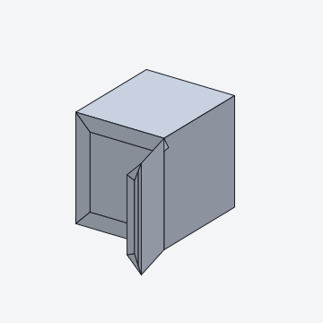
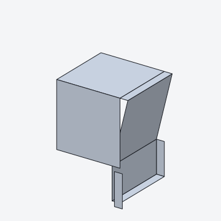
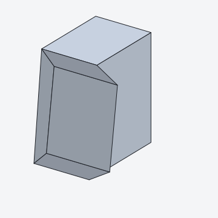
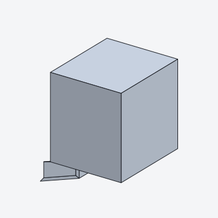
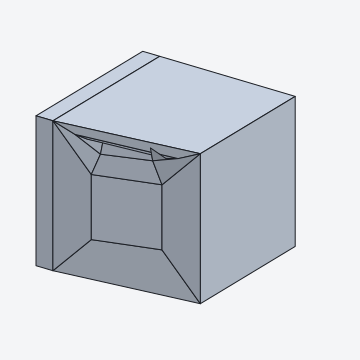
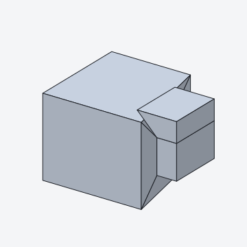
Touches itself, without cutting.


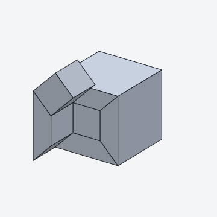
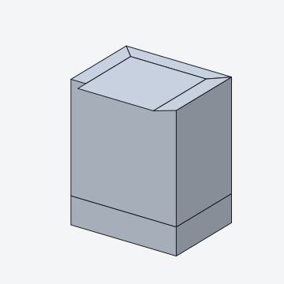
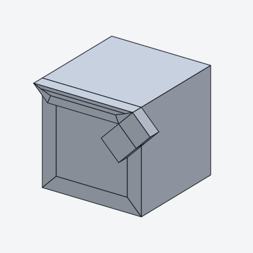
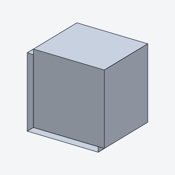
Bent face, with no contact.
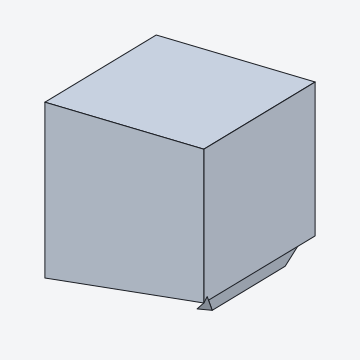

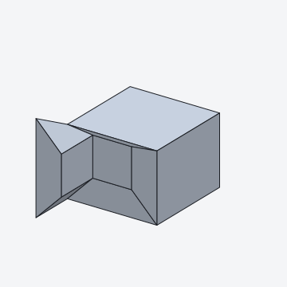
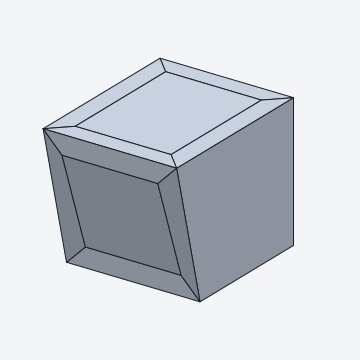
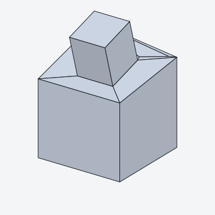
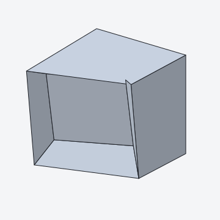
Thin face, with no contact and no bend.
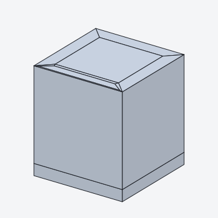
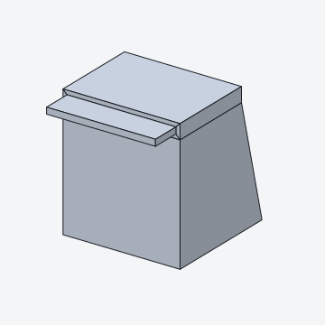
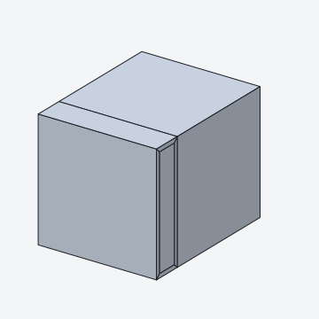
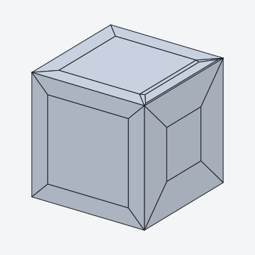
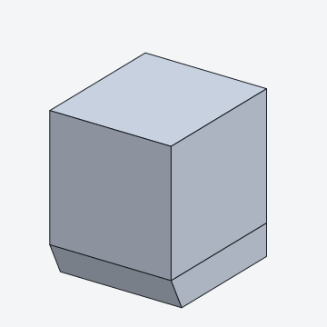
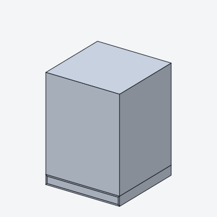
This is sample trace 3 from entry 0000-2. Each number is the distance from that step to the final shape.
| Step | 0 | 1 | 2 | 3 | 4 | 5 |
|---|---|---|---|---|---|---|
| Move that led here | start | inset | extrude | extrude | slide | inset |
| Distance to the final shape | 0.0882 | 0.0883 | 0.0812 | 0.0770 | 0.0000 | 0.0000 |
The distance falls as the build goes on, which is what a useful measure should do. Changing which points are sampled moves the result by about 0.004.
Steps 4 and 5 in the table above are both at distance 0. The last move was an inset. An inset draws new edges on a face but leaves the surface exactly where it was, and shape distance cannot see that.
This matters for scoring. A model that skipped every inset would still score a perfect rebuild. Shape distance says whether the surface is right. It says nothing about whether the faces are right.
| Measure | Count |
|---|---|
| Traces | 10,000 |
| Different meshes, exact | 10,000 |
| Different meshes when vertex and face order is ignored | 9,884 |
| Different surfaces | 7,188 |
| Different surfaces among the clean shapes | 4,289, among 6,533 clean shapes |
More than a quarter of the meshes share their surface with another mesh. The largest group has 261 meshes that are all the plain cube. Their traces used only insets, which change the faces and leave the surface alone. Of the 7,188 surfaces, 6,451 appear only once.
| Test | Shapes flagged | What it counts |
|---|---|---|
| Cuts itself | 148 | Only one part passing through another |
| Blender's overlap test | 505 | Cuts, plus some kinds of contact |
| Cuts or touches itself | 924 | Cuts, plus every kind of contact and in-plane overlap |
The three nest inside each other. Blender flags 146 of the 148 cuts. The widest test flags every shape that Blender flags. The tests agree on what is bad and differ only on how strict to be. "Clean" uses the widest one.
Each check runs on shapes with a known answer before it runs on the dataset. Three mistakes were found and fixed. The known cases caught the first two. Measuring a shape against itself caught the third.
Decide what happens to flawed shapes, then design the measure that scores faces. This does not start until the owner agrees.